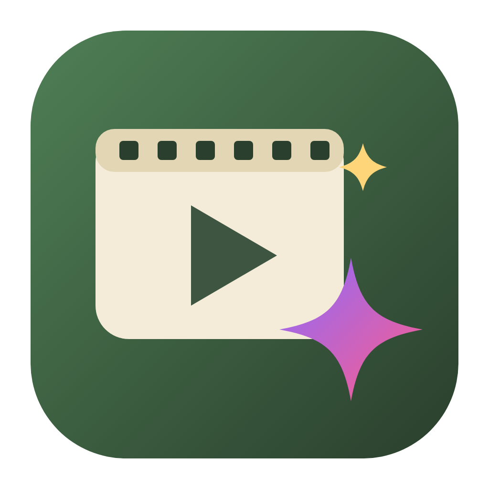

영상뚝딱 사용법
- 1 사진·동영상(+음악)을 넣어요
- 2 위 칸에 원하는 영상을 적어요
- 3 ✨ 자동으로 만들기 를 눌러요
- 4 마음에 들면 ⬇ 동영상 저장
0:00.0 / 0:00.0

영상뚝딱사진 넣고 명령어 한 줄이면 영상 완성Claude AI 키를 넣으면 AI가 사진을 직접 보고 순서·자막·제목·전환 효과를 정해 줍니다. 키가 없어도 기본 자동편집(명령어의 분위기·길이·비율·제목·연락처 인식)으로 만들 수 있어요.
키 발급: console.anthropic.com → API Keys. 키는 이 기기에만 저장되며, 사진은 AI 분석을 위해 작게 줄여 Anthropic으로만 전송됩니다.
Google AI Studio 키(무료 발급)를 넣으면 진짜 같은 사람·물건 사진(Imagen), 사진을 움직이는 영상(Veo), 한국어 AI 성우(Gemini TTS)를 쓸 수 있어요. 영상 생성은 Google 결제 등록이 필요할 수 있고 사용량만큼 요금이 나옵니다. 키 발급: aistudio.google.com/apikey
사진을 고르면 그 사진이 자연스럽게 움직이는 영상(약 5~8초)을 만듭니다. 보통 1~3분 걸려요.
올릴 곳을 고르면 추천(알고리즘)에 유리한 조건을 점검하고, 제목·설명·해시태그·썸네일을 만들어 드려요. (어떤 도구도 조회수를 보장할 수는 없지만, 플랫폼 권장 사항을 지키면 기회가 커집니다)
한 번 마음에 든 영상의 모양(비율·분위기·글꼴·자막·색감·전환·속도·제목 형식·마무리·음악·로고)을 저장해 두면, 다음부터는 새 사진·영상만 넣어서 같은 느낌의 다음 편을 만듭니다.
SNS·메신저·이메일에 올릴 수 있게 화질은 최대한 지키면서 용량을 줄입니다. 목표가 너무 작으면 해상도를 한 단계 낮춰 뭉개짐 없이 선명하게 만듭니다.
아직 고르지 않았습니다.
정해 둔 간격마다 자동으로 새 영상을 만들어 저장합니다. 앱이 켜져 있는 동안 동작해요.
사진 넣고 명령어 한 줄이면 완성되는 홍보 영상 제작기
본 프로그램의 저작권은 (주)알앤케이그린월드에 있으며, 무단 복제·배포·개작을 금합니다.
AI 편집: Claude (Anthropic) · AI 생성·성우: Google Gemini / Imagen / Veo · 글꼴: Noto Sans KR, Black Han Sans, Gowun Batang, Jua (SIL Open Font License)
Space 재생/정지 · ←/→ 0.1초 이동(Shift: 1초) · Delete 장면 삭제 · Ctrl+Z 실행 취소 · Ctrl+Y 다시 실행 · Ctrl+D 장면 복제 · Ctrl+Enter 자동으로 만들기 · Ctrl+E 저장